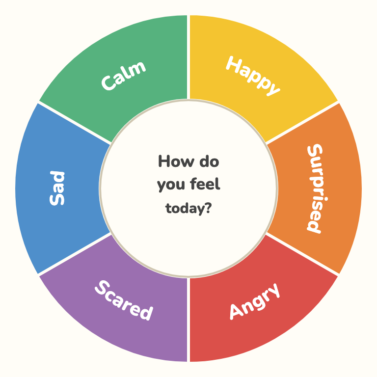
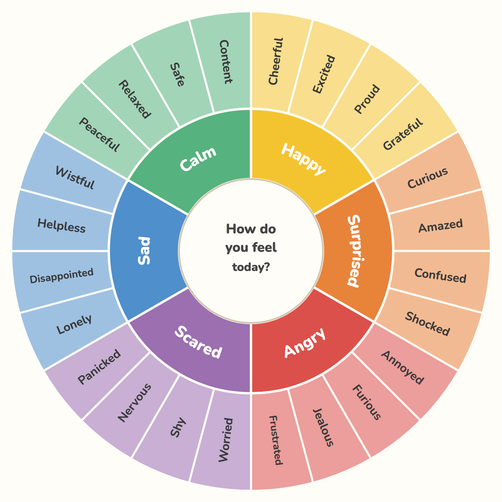
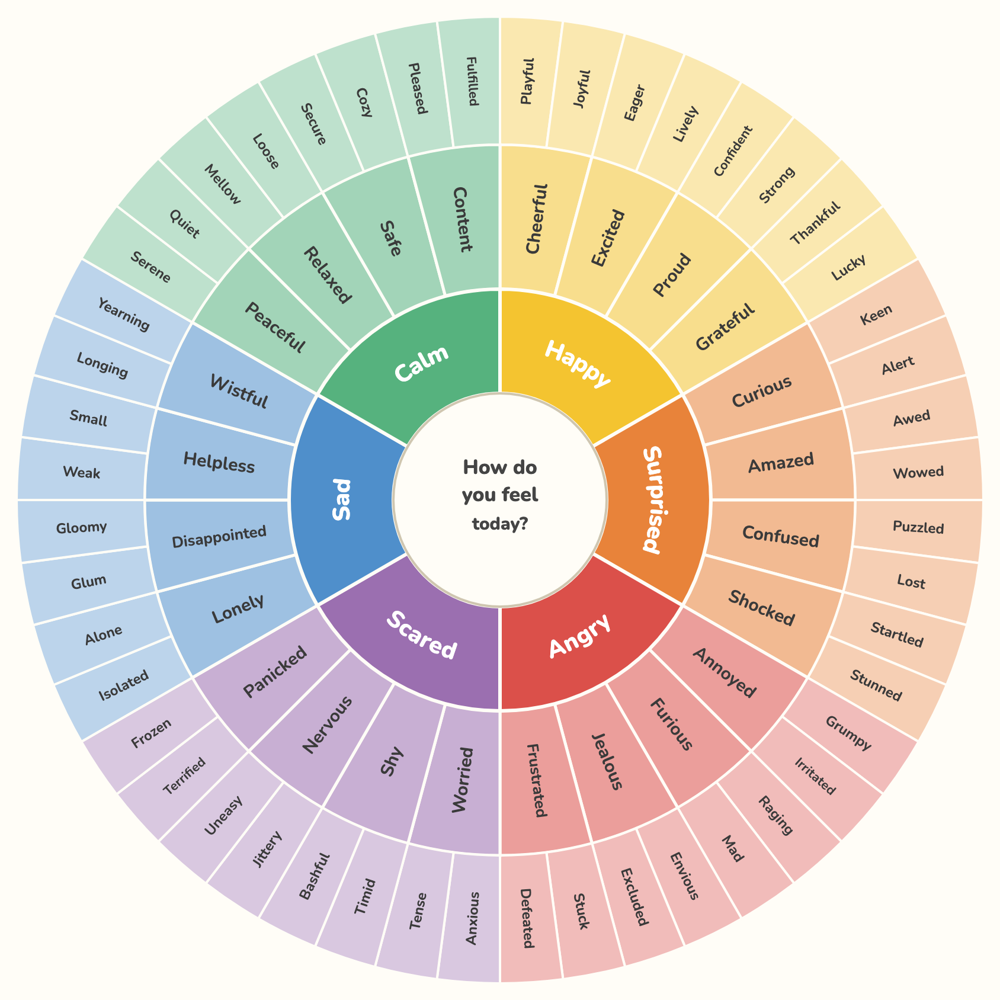

Ages 4–9
Simple

One ring — the 6 core feelings. Big and clear for early readers.
A free, printable wheel that helps kids name what they feel — in their own language, at their own age.

One ring — the 6 core feelings. Big and clear for early readers.

Two rings — each core feeling opens into 4 more exact ones.

Three rings — the full map, down to 48 fine-grained feelings.
Print on A4 at 100% (“Actual size”). 2 pages: the wheel + a monthly tracker.
See how it’s made, suggest improvements, or help translate it.
⭐ View on GitHub 🌍 Add your language 💬 Ideas & feedback